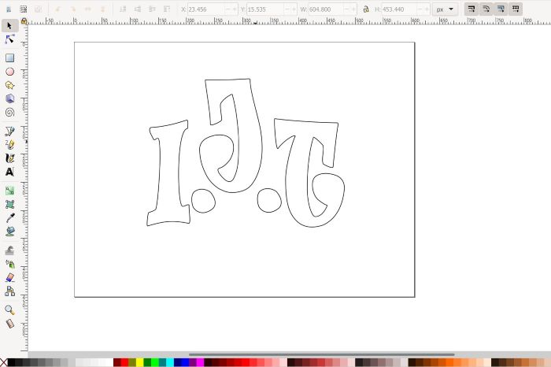
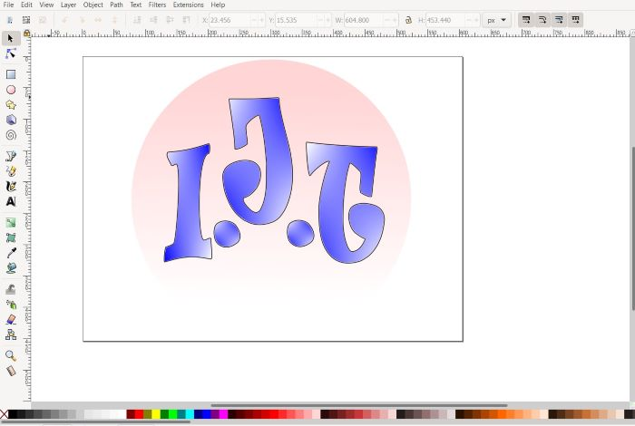
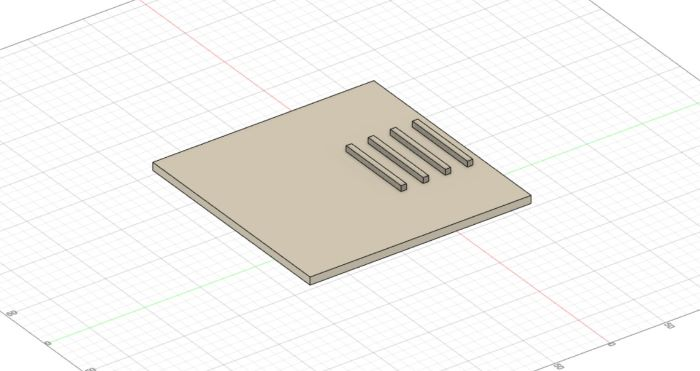
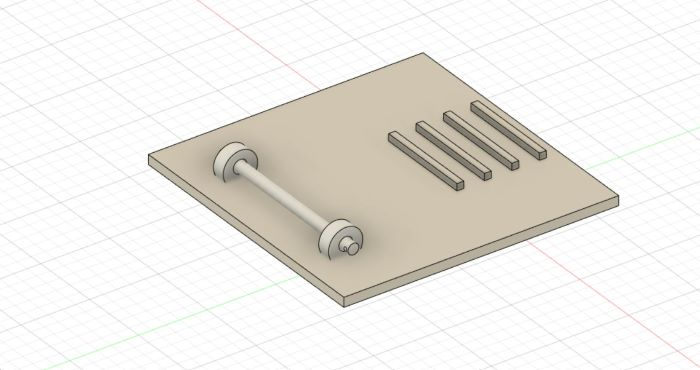
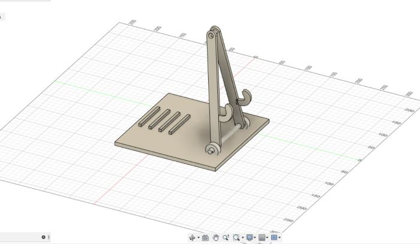
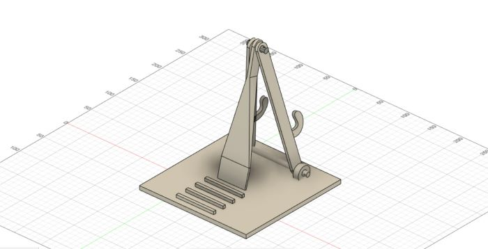
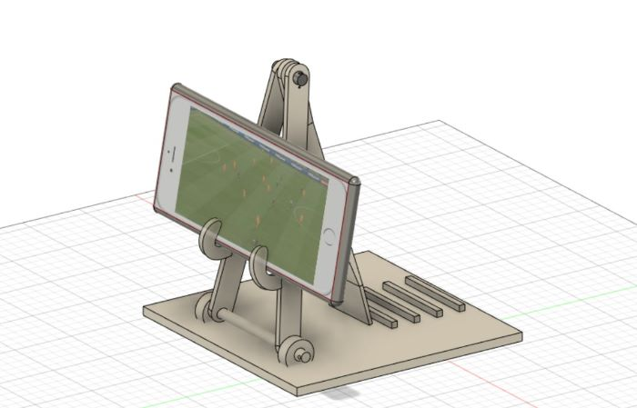

Inkscape and Fusion360 - 2D and 3D modelings
This project aims to create two models, one of them is 2D, which I will create on Inkscape, and the other model is 3D, which I will create with Fusion 360.
On this page you will find all the projects that I participated in with the DigiFab course. Hope you like it and Please contact me if you have any questions or comments
This project aims to create two models, one of them is 2D, which I will create on Inkscape, and the other model is 3D, which I will create with Fusion 360.
In this form, I will try to design my own logo, which contains the first three letters of my first, middle and last name (I.J.T)
In the first step, I drew the letters in a large size and added two dots between them
After that, I colored the letters in a blue gradient color.
3D design programs are many and complex, but unfortunately I have not worked on any of them before. This is the first time that I try to design a 3D model, so I will try to design a simple and uncomplicated model.
Often times when I try to watch a movie or fottball match on my mobile phone, I find it difficult to stabilize the phone on the table. So that it fits within my field of vision. So I thought to design a portable phone holder. I found some ready-made models on the internet, but I wanted to design an alternative model so that I could control the angle of inclination of the phone.
First, create a rectangular base that is 7 mm high. And I added four protrusions to it to stabilize the angle of inclination.
In the second step, I created a pivot attached to the base to make it easy to move the legs on which the phone will rest.
In the third step, I created moving legs on the axis that we created in the previous step, which will support the phone
In this step, I created a third foot, which will control the inclination of the mobile phone. All the legs will be connected to each other by a pivot on the top in this way
In the end, I created a box in the shape of a mobile phone and put it in its designated place
